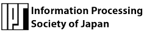
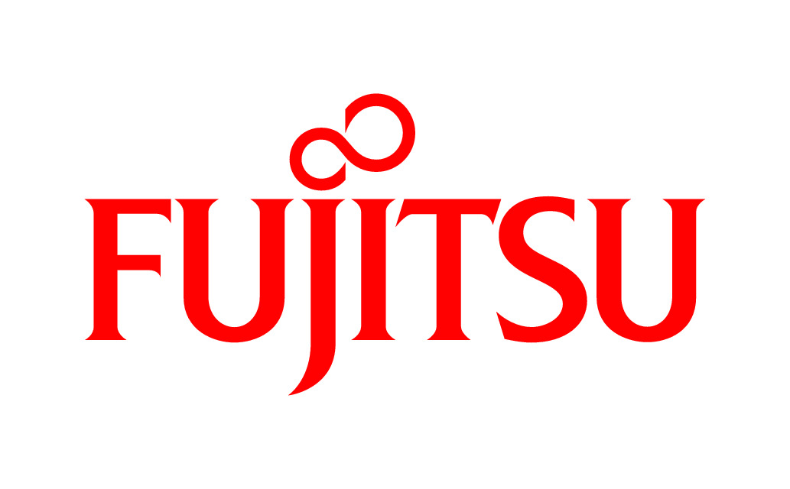
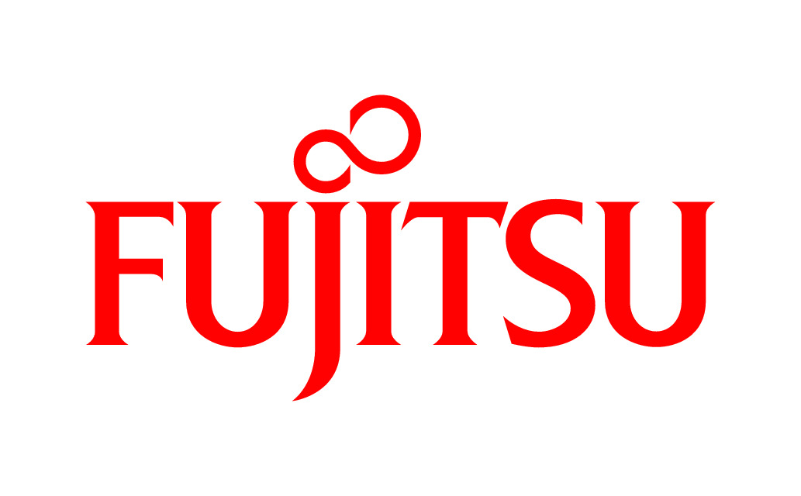
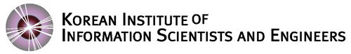
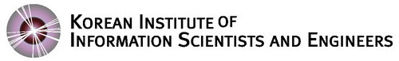
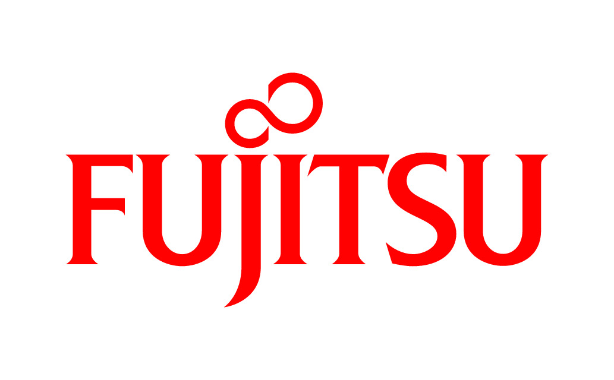
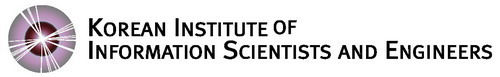
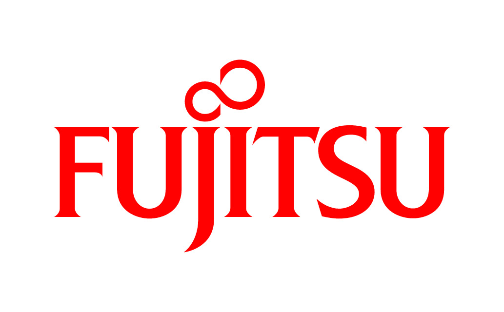
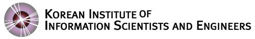

 



 

 



予選を実施した結果、Classroom登録147チーム、予選投稿36チーム中で以下の16チームの決勝進出を決定しました。チームの地域バランスの考慮の結果、得点上位の15チームを選抜し、残り1チームは海外からの参加チームのうちで成績優秀なチームを選抜しました。決勝進出チームの皆さん、おめでとうございます！ 東京で会いましょう。予選における対戦結果の詳細を提出テストサイト（動作テストサイト）上に公開しています。
惜しくも選抜されなかった皆さん、決勝をぜひ一緒に観戦しましょう。 また懇親会に先着順で招待する予定です。 懇親会招待については後日、事務局から連絡します。
| Rank | Team Name | Points | Time | Selected for world final | |
|---|---|---|---|---|---|
| 1 | piyo | 60 | 3535.52 | Selected | |
| 2 | tortoise | 59 | 3868.17 | Selected | |
| 3 | nhho | 58 | 3505.43 | Selected | |
| 4 | kumikomiya | 58 | 3553.47 | Selected | |
| 5 | エーアイテイオウ | 54 | 4414.01 | Selected | |
| 6 | KPCC Kamoike Team | 53 | 3583.51 | Selected | |
| 7 | hirokazu1020 | 50 | 3539.93 | Selected | |
| 8 | kt_tenel | 48 | 3579.49 | Selected | |
| 9 | johnnyhibiki | 47 | 3566.91 | Selected | |
| 10 | nono | 46 | 3594.5 | Selected | |
| 11 | クレストボウズ | 45 | 3792.08 | Selected | |
| 12 | assy | 44 | 3597.53 | Selected | |
| 13 | sc-samurai | 44 | 3633.74 | Selected | |
| 14 | traP | 44 | 3706.33 | Selected | |
| 15 | BpkvT0FAkkQsXsc9 | 43 | 3923.68 | Selected | |
| 16 | Team Bits | 42 | 3779.2 | ||
| 17 | チーム森 | 40 | 3719.45 | ||
| 18 | Neptune | 40 | 3761.96 | ||
| 19 | iwatsushi | 39 | 3712.02 | ||
| 20 | Taiyo | 39 | 5175.29 | ||
| 21 | sumoru | 37 | 3923.05 | ||
| 22 | 楓信仰 | 36 | 3716.43 | ||
| 23 | goura32 | 36 | 3775.72 | ||
| 24 | DOG | 34 | 4173.28 | ||
| 25 | ThreeStones | 30 | 3962.34 | ||
| 26 | Sakuma Hiroki | 30 | 6041.42 | ||
| 27 | blank | 22 | 4925.35 | Selected | |
| 28 | KTH | 20 | 4850.93 | ||
| 29 | SouthNorth | 18 | 6659.42 | ||
| 30 | saida | 11 | 9554.2 | ||
| 31 | glycine | 8 | 10730.6 | ||
| 32 | tf-b0team | 6 | 16256 | ||
| 33 | raven | 6 | 16360 | ||
| 34 | はぐりん | 5 | 16360 | ||
| 35 | shimo | 4 | 16360 | ||
| 36 | いんげんだもの なしを | 4 | 16360 |